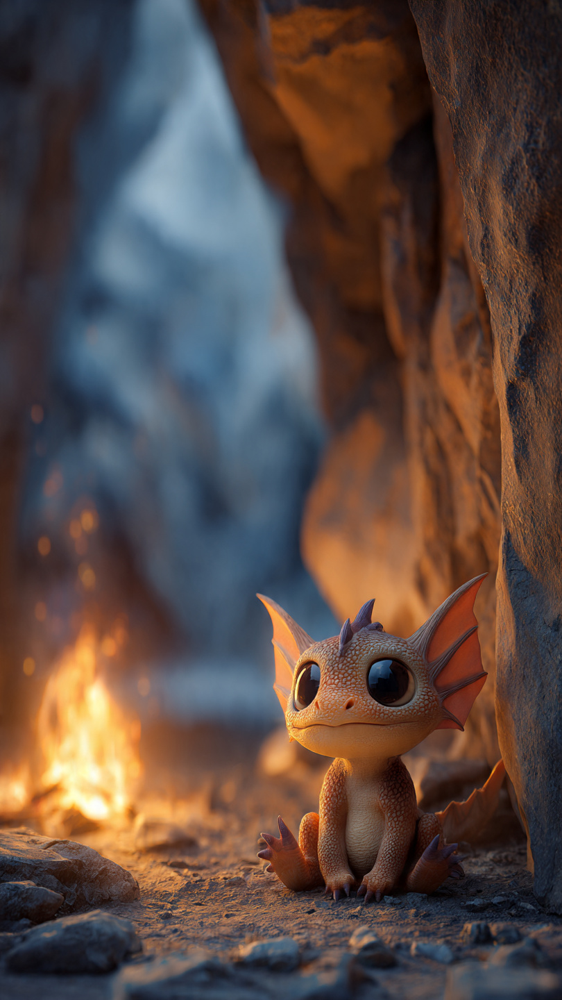
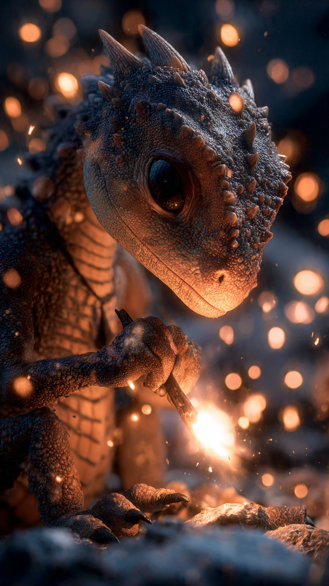

```html
🐉 التنين الصغير الذي كان يخاف من النار | قصص أطفال
```
في وادٍ بعيد بين الجبال، كان يعيش تنين صغير اسمه رومي.
كان رومي مختلفًا عن باقي التنانين.
فبينما كانت التنانين الأخرى تستطيع إخراج نار قوية من أفواهها، كان رومي يخاف حتى من رؤية اللهب.
كان يجلس بعيدًا عندما يتدرب أصدقاؤه.
يشاهد النار تخرج من أفواههم مثل الألعاب النارية، ثم يبتعد بسرعة.
كان يقول في نفسه:
"ماذا لو خرجت النار ولم أستطع التحكم بها؟"
كان والد رومي يقول له:
"النار ليست عدوًا يا صغيري..."
"هي قوة تحتاج فقط إلى من يفهمها."
لكن رومي لم يكن مقتنعًا.
فكلما حاول التدريب، كان يشعر بالخوف ويتوقف.
في يوم من الأيام، أعلنت التنانين عن رحلة إلى الجبال لجمع بلورات نادرة تستخدم لحماية الوادي.
شارك الجميع في الرحلة، حتى رومي.
كان يريد أن يثبت لنفسه أنه يستطيع فعل شيء مهم.
وصلت المجموعة إلى الجبال، لكن فجأة بدأت عاصفة ثلجية قوية.
أصبح الطريق صعبًا، وانخفضت الحرارة كثيرًا.
حاولت التنانين استخدام نارها للتدفئة، لكنها لم تستطع الوصول إلى مكان آمن.
نظر الجميع إلى رومي.
قال أحدهم:
"ربما تستطيع مساعدتنا."
ارتبك رومي وقال:
"لكنني أخاف من ناري."
وفي تلك اللحظة، أدرك أن عليه مواجهة خوفه.
لم يكن يعرف أن هذه اللحظة ستغير حياته إلى الأبد.
📷 الصورة رقم 1

وقف رومي وسط العاصفة، وكانت الرياح الباردة تهب حوله.
نظر إلى أصدقائه، ورأى أنهم يحتاجون إلى مساعدته.
أغلق عينيه وقال:
"لن أجعل الخوف يمنعني من المحاولة."
أخذ نفسًا عميقًا، وحاول إخراج نار صغيرة.
في البداية خرجت شرارة ضعيفة فقط.
نظر رومي إليها بدهشة.
لم تكن مخيفة كما كان يظن.
قال والده:
"أحسنت يا رومي!"
"النار لا تحتاج إلى القوة فقط، بل تحتاج إلى الهدوء والسيطرة."
بدأ رومي يتدرب أكثر.
لم يحاول صنع لهب كبير، بل ركز على التحكم في النار الصغيرة.
استخدمها لتدفئة أصدقائه، وإذابة بعض الثلج من الطريق، وإضاءة الأماكن المظلمة.
بعد فترة قصيرة، وصلوا إلى كهف آمن داخل الجبل.
كانت التنانين سعيدة جدًا.
قال أحدهم:
"لم نكن نحتاج إلى أكبر نار..."
"كنا نحتاج إلى شخص يعرف كيف يستخدمها بحكمة."
ابتسم رومي.
لأول مرة لم يشعر بالخوف من ناره.
بل شعر أنها جزء جميل منه.
لكن أثناء وجودهم داخل الكهف، اكتشفوا مشكلة جديدة.
كانت بلورات الحماية موجودة في مكان عميق داخل الجبل، والطريق إليها كان مغلقًا بالجليد.
نظر الجميع إلى الطريق المسدود.
وكان على رومي أن يقرر...
هل سيستخدم قوته الجديدة لإنقاذ الجميع؟
📷 الصورة رقم 2

اقترب رومي من الطريق المغلق بالجليد.
كان المكان مظلمًا وباردًا، لكن هذه المرة لم يهرب.
تذكر كل التدريبات التي قام بها، وتذكر أن النار ليست شيئًا يجب أن يخاف منه.
أخرج رومي لهبًا صغيرًا وركز عليه.
لم يجعل النار قوية جدًا، بل جعلها دافئة وهادئة.
بدأ الجليد يذوب ببطء، وظهر الطريق المؤدي إلى البلورات.
دخلت التنانين إلى المكان، ووجدوا بلورات الحماية تلمع مثل النجوم.
حملوا البلورات وعادوا إلى الوادي.
وعندما وصلوا، احتفل الجميع برومي.
قالت له إحدى التنانين:
"لقد أصبحت أقوى تنين صغير في الوادي."
ابتسم رومي وقال:
"لم أصبح قويًا لأن ناري أصبحت أكبر..."
"بل لأنني تعلمت ألا أخاف منها."
ومنذ ذلك اليوم، أصبح رومي يساعد التنانين الصغيرة التي تخاف من قدراتها.
كان يقول لهم:
"كل قوة تحتاج إلى وقت لفهمها."
"والخوف لا يختفي عندما نهرب منه، بل عندما نتعلم كيف نواجهه."
كبر رومي وأصبح من أشهر التنانين في الجبال.
ولم يتذكره الجميع بسبب النار التي صنعها...
بل بسبب الشجاعة التي وجدها بداخله.
🐉🔥 انتهت القصة 🔥🐉
العبرة:
الخوف طبيعي، لكن الشجاعة الحقيقية هي أن نحاول ونتعلم حتى نكتشف قوتنا.